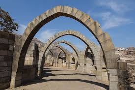

Rani Ki Vav
Stepwell from the 11th century in Patan.
Know More

Modhera Sun Temple
Dedicated to the Sun God, built in the 11th century.
Know More
Lothal
Ancient city of the Indus Valley Civilization.
Know More
Dholavira
One of the prominent Harappan archaeological sites.
Know More

Champaner-Pavagadh
Historic fortified city and UNESCO World Heritage Site.
Know More

Sarkhej Roza
Architectural complex near Ahmedabad.
Know More

Vijay Vilas Palace
Royal palace in Mandvi, built in the 1920s.
Know More

Adalaj Vav
Beautiful 15th-century stepwell near Gandhinagar.
Know More